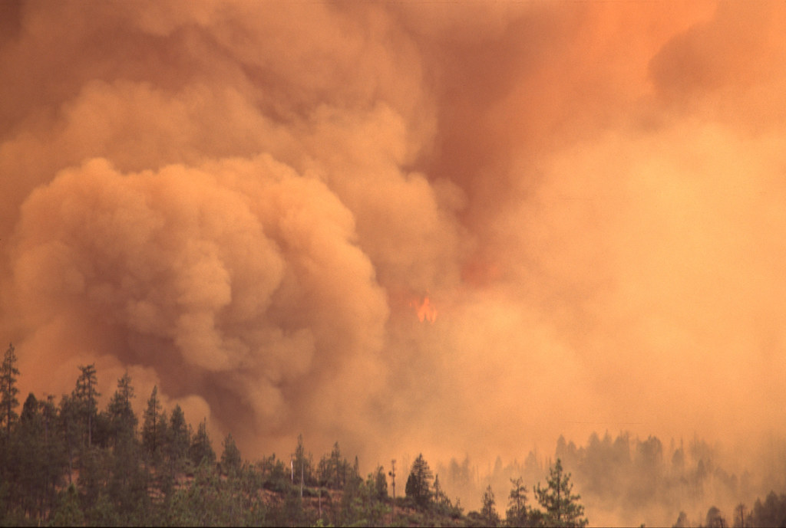

By Brooke Jarvis
Oct. 21, 2023
Andrew Bryant can still remember when he thought of climate change as primarily a problem of the future. When he heard or read about troubling impacts, he found himself setting them in 2080, a year that, not so coincidentally, would be a century after his own birth. The changing climate, and all the challenges it would bring, were “scary and sad,” he said recently, “but so far in the future that I’d be safe.”
That was back when things were different, in the long-ago world of 2014 or so. The Pacific Northwest, where Bryant is a clinical social worker and psychotherapist treating patients in private practice in Seattle, is a largely affluent place that was once considered a potential refuge from climate disruption. Climate change sometimes came up in therapy sessions in the context of other issues — say, a couple having arguments because they couldn’t decide if it was still ethical to have kids — but it was rare, and usually fairly theoretical. “We’re lucky to be buffered by wealth and location,” Bryant said. “We are lucky to have the opportunity to look away.”
The smoke was the first sign that things were starting to change. People who live in the coastal Northwest often joke that the brief, beautiful bluebird summers are the reason everyone puts up with so many months of chilly gloom. But starting in the mid-2010s, those beloved blue skies began to disappear. First, the smoke came in occasional bursts, from wildfires in Canada or California or Siberia, and blew away when the wind changed direction. Within a few summers, though, it was coming in thicker, from more directions at once, and lasting longer. The sun turned blood-red or was all but blotted out, disappearing along with the city skyline; the sky turned gray, or sepia, or eerily tangerine, and ash floated down like snow. Sometimes there were weeks when you were advised not to open your windows or exercise outside. Sometimes there were long stretches where you weren’t supposed to breathe the outside air at all.
Now lots of Bryant’s clients wanted to talk about climate change. They wanted to talk about how strange and disorienting and scary this new reality felt, about what the future might be like and how they might face it, about how to deal with all the strong feelings — helplessness, rage, depression, guilt — being stirred up inside them. As a therapist, Bryant found himself unsure how to respond. He grew up deeply interested in science and nature — he was a biology major before his fascination with human behavior turned him toward social work — but he always thought of those interests as separate from the profession he would eventually choose. And while his clinical education offered lots of training in, say, substance abuse or family therapy, there was nothing about environmental crisis, or how to treat patients whose mental health was affected by it. He began reaching out to other counselors, who had similar stories. They came from a variety of clinical backgrounds and orientations, but none of their trainings had covered issues like climate change or environmental anxiety. Bryant immersed himself in the subject, joining and founding associations of climate-concerned therapists. The Pacific Northwest, after all, was hardly alone in seeing scary new impacts, and lots of places were experiencing far worse. He searched for emerging research on the intersection of climate change and psychology, which was scattered across a variety of fields and journals, and eventually started a website, Climate & Mind, to serve as a sort of clearing house for other therapists searching for resources. Instead, the site became an unexpected window into the experience of would-be patients: Bryant found himself receiving messages from people around the world who stumbled across it while looking for help.
Over and over, he read the same story, of potential patients who’d gone looking for someone to talk to about climate change and other environmental crises, only to be told that they were overreacting — that their concern, and not the climate, was what was out of whack and in need of treatment. (This was a story common enough to have become a joke, another therapist told me: “You come in and talk about how anxious you are that fossil-fuel companies continue to pump CO2 into the air, and your therapist says, ‘So, tell me about your mother.’”) In many of the messages, people asked Bryant for referrals to climate-focused therapists in Houston or Canada or Taiwan, wherever it was the writer lived. He found himself apologizing repeatedly. “I can’t,” he’d write. “The field doesn’t really exist yet.” But it was clear to him that the messages, like the smoke, were a sign of a bigger change on the way. By 2021, when the Northwest suffered through a shocking heat wave that melted infrastructure, killed hundreds of people and scorched millions of evergreen trees, the symbol of the region’s now-fragile lushness, his practice had shifted to reflect a new reality of climate psychology. His clients didn’t just bring up the changing climate incidentally, or during disconcerting local reminders; rather, many were activists or scientists or people who specifically sought out Bryant because of their concerns about the climate crisis. The sorts of people who, not so long ago, had cold-emailed him about their struggle to find treatment could now turn to resources like the list maintained by the Climate Psychology Alliance North America, which contains nearly 300 psychotherapists around the country who are what the organization calls “climate aware.”
It had been a challenging few years, Bryant told me when I first called to talk about his work. There were some ways in which climate fears were a natural fit in the therapy room, and he believed the field had coalesced around some answers that felt clear and useful. But treating those fears also stirred up lots of complicated questions that no one was quite sure how to answer. The traditional focus of his field, Bryant said, could be oversimplified as “fixing the individual”: treating patients as separate entities working on their personal growth. Climate change, by contrast, was a species-wide problem, a profound and constant reminder of how deeply intertwined we all are in complex systems — atmospheric, biospheric, economic — that are much bigger than us. It sometimes felt like a direct challenge to old therapeutic paradigms — and perhaps a chance to replace them with something better.
In one of climate psychology’s founding papers, published in 2011, Susan Clayton and Thomas J. Doherty posited that climate change would have “significant negative effects on mental health and well-being.” They described three broad types of possible impacts: the acute trauma of living through climate disasters; the corroding fear of a collapsing future; and the psychosocial decay that could damage the fabric of communities dealing with disruptive changes. All of these, they wrote, would make the climate crisis “as much a psychological and social phenomenon as a matter of biodiversity and geophysics.”
Many of these predictions have since been borne out. Studies have found rates of PTSD spiking in the wake of disasters, and in 2017 the American Psychological Association defined “ecoanxiety” as “a chronic fear of environmental doom.” Climate-driven migration is on the rise, and so are stories of xenophobia and community mistrust. According to a 2022 survey by Yale and George Mason University, a majority of Americans report that they spend time worrying about climate change. Many say it has led to symptoms of depression or anxiety; more than a quarter make an active effort not to think about it. A poll by the American Psychiatric Association in the same year found that nearly half of Americans think climate change is already harming the nation’s mental health.
In June, the Yale Journal of Biology and Medicine published a paper cautioning that the world at large was facing “a psychological condition of ‘systemic uncertainty,’” in which “difficult emotions arise not only from experiencing the ecological loss itself,” but also from the fact that our lives are inescapably embedded in systems that keep on making those losses worse. Climate change, in other words, surrounds us with constant reminders of “ethical dilemmas and deep social criticism of modern society. In its essence, climate crisis questions the relationship of humans with nature and the meaning of being human in the Anthropocene.” This is not an easy way to live. Human well-being, the psychologist David W. Kidner wrote, has historically been linked to “participation in a healthy ecocultural context.” Living within a context that is obviously unhealthful, he wrote, is painful: “a dimly intuited ‘fall’ from which we spend our lives trying to recover, a guilt we can never quite grasp or expiate” — a feeling of loss or dislocation whose true origins we look for, but often fail to see. This confusion leaves us feeling even worse.
When Barbara Easterlin first started studying environmental psychology 30 years ago, she told me, the focus of study was on ways in which cultivating a relationship with nature can be good for mental health. There was little or no attention to the fact that living through, or helping to cause, a collapse of nature can also be mentally harmful. Today Easterlin, a clinical psychologist, is working on developing training courses in climate therapy, for the CPA-NA and elsewhere, but she cautions that the field is still so new that it does not yet have evidence-tested treatments or standards of practice. Therapists sometimes feel as if they are finding the path as they go.
“Until the language of ecoanxiety enters the conversation, lots of people don’t think of it as something to bring up."
- Andrew Bryant, clinical social worker and psychotherapist
Bryant recalls feeling uncertain about how to react when, even on the smokiest days, with the Air Quality Index so high you couldn’t see to the end of the block, patients would walk into his office and simply fail to mention the toxic haze outside the door. It was such a notable omission that, like other therapists I spoke to, he began to wonder if he should bring up climate change, as a way of encouraging people to recognize feelings from which they may have been hiding. Bryant still isn’t sure of the right approach, but he has begun to make a point of seeding conversations with possible openings. “Holding that reality — my environment is harmful, and I’m trying to live in it — takes so much energy,” he said. “But until the language of ecoanxiety enters the conversation, lots of people don’t think of it as something to bring up.”
Rebecca Weston, a licensed clinical social worker practicing in New York and a co-president of the CPA-NA, told me that when she treats anxiety disorders, her goal is often to help the patient understand how much of their fear is internally produced — out of proportion to the reality they’re facing. But climate anxiety is a different challenge, because people worried about climate change and environmental breakdown are often having the opposite experience: Their worries are rational and evidence-based, but they feel isolated and frustrated because they’re living in a society that tends to dismiss them.
One of the emerging tenets of climate psychology is that counselors should validate their clients’ climate-related emotions as reasonable, not pathological. This doesn’t mean confirming particular predictions or scenarios — they’re therapists, not climate scientists — or amplifying existing fears, but it does mean validating that feelings like grief and fear and shame aren’t a form of sickness, but, as Weston put it, “are actually rational responses to a world that’s very scary and very uncertain and very dangerous for people.” In the words of a handbook on climate psychology, “Paying heed to what is happening in our communities and across the globe is a healthier response than turning away in denial or disavowal.”
But this, too, raises difficult questions. “How much do we normalize people to the system we’re in?” Weston asked. “And is that the definition of health? Or is the definition of health resisting the things that are making us so unhappy? That’s the profound tension within our field.”
One recent afternoon, I logged into Zoom and watched my computer screen fill with faces. They belonged to members of the Alliance of Climate Therapists-Northwest, a group that Bryant organized with Bob Berley, another therapist who found that his patients wanted to talk about climate change. Part support group, part study group, the alliance included established therapists with decades of practice, as well as others who were still working through their education or internships. It was meant to provide a way for therapists to gather and talk about the questions that were bubbling up in their meetings with patients — “to figure out,” as Bryant put it, “how to do this work.”
“It seems to shift all the time, the sort of content and material that people are bringing in,” Alexandra Woollacott, a psychotherapist in Seattle, told the group. Sometimes it was a pervasive anxiety about the future, or trauma responses to fires or smoke or heat; other times, clients, especially young ones, wanted to vent their “sort of righteous anger and sense of betrayal” at the various powers that had built and maintained a society that was so destructive.
“I’m so glad that we have each other to process this,” she said, “because we’re humans living through this, too. I have my own trauma responses to it, I have my own grief process around it, I have my own fury at government and oil companies, and I think I don’t want to burden my clients with my own emotional response to it.”
“I had a client recently say, ‘Oh, I’m so sorry to burden you with all of my climate anxiety!’” Zoey Rogers, a clinical psychologist, said in response. “And I was like: ‘No, it’s OK. I’m in it with you.’”
In a field that has long emphasized boundaries, discouraging therapists from bringing their own issues or experiences into the therapy room, climate therapy offers a particular challenge: Separation can be harder when the problems at hand affect therapist and client alike. Some therapists I spoke to were worried about navigating the breakdown of barriers, while others had embraced it. “There is no place on the planet that won’t eventually be impacted, where client and therapist won’t be in it together,” a family therapist wrote in a CPA-NA newsletter. “Most therapists I know have become more vulnerable and self-disclosing in their practice.”
On the Zoom, Annie Dwyer, still a counselor in training, told the group that she had been thinking about how to apply traditional trauma treatments to environmental losses. While therapy has often centered on helping people move, mentally, away from the feelings of danger they experienced in the past into the safer world of the present, that formula doesn’t apply to living with an ongoing threat, or feeling grief over a loss that never stops. “If you look at or consider typical theoretical framings of something like post-traumatic growth, which is the understanding of this idea that people can sort of grow and become stronger and better after a traumatic event,” she said, then the climate crisis poses a dilemma because “there is no afterwards, right? There is no resolution anytime in our lifetimes to this crisis that we nonetheless have to build the capacities to face and to endure and to hopefully engage.”
“How,” she asked, “do you think about resilience apart from resolution?”
Nicole Torres, who practices in Bellingham, Wash., told the group that she sometimes tells her clients about her first time seeing a sky full of stars after growing up in New York City. She had no idea there were so many. She believes many of her patients are also disconnected from the natural world, which means that they struggle to process or even recognize the grief and alienation that comes from living in a society that treats nature as other, a resource to be used and discarded.
“I’m so excited by what you’re bringing in,” Woollacott replied. “I’m doing psychoanalytic training at the moment, and we study attachment theory” — how the stability of early emotional bonds affects future relationships and feelings of well-being. “But nowhere in the literature does it talk about our attachment to the land.”
Torres said that she sometimes takes her therapy sessions outside or asks patients to remember their earliest and deepest connections with animals or plants or places. She believes it will help if they learn to think of themselves “as rooted beings that aren’t just simply living in the human overlay on the environment.” It was valuable to recognize, she said, that “we are part of the land” and suffer when it suffers.
The conversation was flowing enthusiastically. After some people spoke about introducing their clients to methods — mindfulness, distress tolerance, emotion regulation — to help manage feelings of stress or panic and avoid burnout, Torres pointed out that many of her clients struggle with existential and quality of life issues that cannot be easily solved through a mere intervention. She also encourages them to narrativize the problem, including themselves as agents of change inside stories about how they came to be in this situation, and how they might make it different. And then she encourages them to find a community of other people who care about the same problems, with whom they could connect outside the therapy room. As Woollacott said earlier: “People who share your values. People who are committed to not looking away.”
“There is no resolution anytime in our lifetimes to this crisis that we nonetheless have to build the capacities to face and to endure and to hopefully engage."
- Annie Dwyer, counselor in training
Dwyer told the group that she had been thinking more about psychological adaptation as a form of climate mitigation, not so different from sea walls or ruggedized power grids. Therapy, she said, could be a way to steward human energy and creative capacities at a time when they’re most needed.
It was hard, Bryant told me when we first spoke, to do this sort of work without finding yourself asking bigger questions — namely, what was therapy actually about?
Many of the therapists I talked to spoke of their role not as “fixing” a patient’s problem or responding to a pathology, but simply giving their patients the tools to name and explore their most difficult emotions, to sit with painful feelings without instantly running away from them. For this, they found that many of the methods in their traditional tool kits continue to be useful in climate psychology. Anxiety and hopelessness and anger are all familiar territory, after all, with long histories of well-studied treatments. Plus, people bring their own issues and patterns to the particularities of the climate crisis: hypervigilant doom-scrolling if they have control issues, perhaps, or falling into despondency if they have a tendency toward depression. (And, in defiance of the joke, sometimes it is still helpful to talk about your mother.) They focused on trying to help patients develop coping skills and find meaning amid destabilization, to still see themselves as having agency and choice.
Weston, the therapist in New York, has had patients who struggle to be in a world that surrounds them with waste and trash, who experience panic because they can never find a place free of reminders of their society’s destruction. She, like Bryant, has worked with couples who fought over whether it was ethical to have children in the face of all that is at risk. In her experience, patients from more privileged backgrounds were more likely to resist the idea, while those from communities with a long history of other traumas and destabilization were more open: They were used to seeing life go on even amid threats that could feel existential. It was hard, Bryant told me when we first spoke, to do this sort of work without finding yourself asking bigger questions — namely, what was therapy actually about?
This was one reason, Weston said, that she has trouble with the repeated refrain that therapist and patient experiencing the same losses and dreads at the same time constituted a major departure from traditional therapeutic practice. Though it was important to think carefully about boundaries between patient and therapist — and their erasure — she believed this framing reflected and reinforced a bias inherent in a field that has long been most accessible to, and practiced by, the privileged. It was hardly new in the world, after all, to face the collapse of your entire way of life and still find ways to keep going.
Lately, Bryant told me, he’s been most excited about the work that happens outside the therapy room: places where groups of people gather to talk about their feelings and the future they’re facing. It was at such a meeting — a community event where people were brainstorming ways to adapt to climate chaos — that Weston, realizing she had concrete skills to offer, was inspired to rework her practice to focus on the challenge. She remembers finding the gathering empowering and energizing in a way she hadn’t experienced before. In such settings, it was automatic that people would feel embraced instead of isolated, natural that the conversation would start moving away from the individual and toward collective experiences and ideas. There was no fully separate space, to be mended on its own. There was only a shared and broken world, and a community united in loving it.
This story has been reproduced as part of coursework for the Philip Merrill College of Journalism at the University of Maryland, College Park. It was originally published by The New York Times.